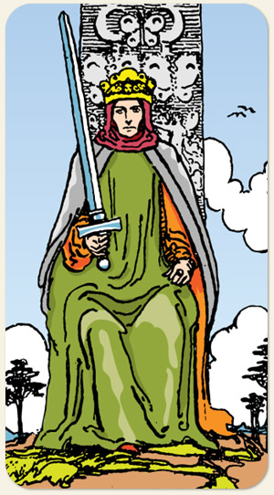

A autoridade intelectual, o julgamento imparcial e a maestria da lei. Representa o ápice do elemento Ar, indicando uma mente que governa com lógica, ética e poder de decisão. É a carta do estrategista, do conselheiro analítico e da verdade absoluta, marcando uma fase de ordem, disciplina mental e a aplicação prática da justiça sobre as emoções.
A mente brilhante, pensamentos elaborados, a força da lógica, matemático, racional, estabelece conexões, passa o conhecimento adiante, busca o conhecimento do mundo, busca conhecer o outro, poliglota, vê a beleza e a nobreza do conhecimento.
Positivo: Pessoa falante e elegante, tem fala envolvente, mestres, doutores, professores, pensadores, filósofos, outros comunicadores, juízes, advogados. Possui uma forma objetiva,clara e coesa de se comunicar, possui uma vasta rede de contatos.
Negativo: Injustiça, fofoca, má trama, derrubar alguém pela palavra, pessoa calculista, autoridade sem coração, enganador, é a frieza do metal. Tem dificuldade de se relacionar com quem não pensa igual a ele. Falsificador: documentos pertencem ao domínio do ar
Símbolos: Trono, Coroa, Borboletas, Postura Frontal, Anel, Pássaro, Espada Inclinada.
Cores: Azul, Amarelo, Vermelho, Roxo, Cinza.